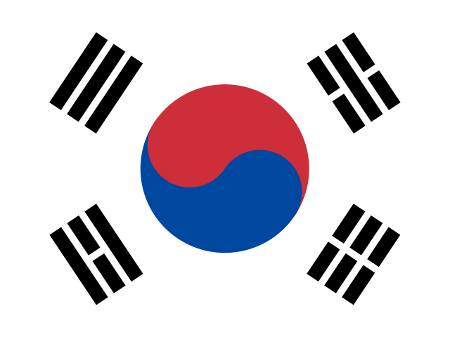

ビジネスニュース・デイリーダイジェスト
1業界連動マップ（因果フロー）
きょうの主要トピックの因果連鎖。色＝影響の符号、矢印＝波及の向き。各ノードをタップすると関連ニュースをポップアップ表示します。業界横断のマクロ文脈はダッシュボードの「業界の動き(2026)」を参照。
2時事ニュース（全項目）
見出しをクリックで、背景・サマリ・重要ポイント・今後の予測・勉強テーマを表示。
IT・AI
 エヌビディア、ジェンスン・ファン氏がCEOに即時復帰 「安保上のリスクなし」と判断、12日の辞任から11日で撤回 AI資本サイクル＋AI投資の資金循環が再起動し、サプライチェーン全体に安心感 −統治への疑問が残り、ガバナンス・ディスカウントを招くおそれ
エヌビディア、ジェンスン・ファン氏がCEOに即時復帰 「安保上のリスクなし」と判断、12日の辞任から11日で撤回 AI資本サイクル＋AI投資の資金循環が再起動し、サプライチェーン全体に安心感 −統治への疑問が残り、ガバナンス・ディスカウントを招くおそれ
背景
ファン氏は中国のスパイ疑惑がある女性との不倫問題を受け12日に辞任を表明し、暫定CEOは先端AI半導体の中国輸出停止を打ち出していた。AI投資の資金循環を支える中核人物の退場で、AI関連株は2025年5月以来の安値圏に沈んでいた。
サマリ
エヌビディアは23日、取締役会がファン氏との協議や米政府高官への意見聴取を経て、安全保障上のリスクはないと判断しCEOへの即時復帰を決めたと発表した。同日の米市場で株価は31%高と約23年ぶりの上昇率を記録した。
重要ポイント
- 辞任表明からわずか11日での復帰
- 米政府高官への聴取で安保リスクなしと判断
- 23日の株価は31%高、ナスダックも6.5%高
- 企業統治・法令順守への疑問は残る
今後の予測
市場は司令塔の復帰をひとまず歓迎したが、取締役会の判断過程や中国輸出方針の再修正をめぐり、機関投資家や議会から説明を求める声が強まる可能性がある。ネオクラウドへの出資など資金循環の再開が次の焦点。
勉強テーマ
マーケット
 日経平均が2207円高の5万8644円、上昇率3.9% ファン氏復帰で半導体株にストップ高続出、選別色も鮮明 AI資本サイクル＋AI悲観の巻き戻しで投資家心理が改善 −上昇が半導体に偏り、相場の裾野は広がっていない
日経平均が2207円高の5万8644円、上昇率3.9% ファン氏復帰で半導体株にストップ高続出、選別色も鮮明 AI資本サイクル＋AI悲観の巻き戻しで投資家心理が改善 −上昇が半導体に偏り、相場の裾野は広がっていない
背景
3連休前の20日は米ハイテク株安を受けて大きく下げ、AI関連株は悲観に傾いていた。エヌビディアのCEO復帰の発表が連休中にあり、24日の東京市場は買い戻しから始まった。
サマリ
日経平均は前週末比2207円98銭（3.91%）高で終えた。村田製作所やイビデン、KOKUSAI ELECTRICが制限値幅の上限まで買われ、アドバンテストも12%高。一方で内需・ディフェンシブ株の多くは上昇が鈍く、指数の上げは半導体関連に集中した。
重要ポイント
- 上げ幅2207円、上昇率3.9%
- 村田・イビデン・KOKUSAIがストップ高
- アドバンテスト12%高、ソフトバンクG4.7%高
- 通信・電鉄・電力など内需株は下落も多い
今後の予測
半導体株主導の戻りは、エヌビディアの統治問題や米金利次第で振れやすい。指数が「高市ライン」と呼ばれる水準を回復・維持できるか、内需株への循環が起きるかが年末相場の分かれ目になる。
勉強テーマ
金融
上場企業の4〜9月期純利益26%増の35.7兆円、6年連続で最高 AI需要と円安で製造業73%増、資源高は商社・海運を押し上げ AI資本サイクル＋業績の厚みが株価の下支えに −外部要因頼みで、円高・資源安に転じると反動が大きい
背景
東証プライム上場の3月期企業1028社を日経が集計した。AI関連の設備投資と円安、資源高、金利上昇という複数の追い風が重なった半期だった。
サマリ
純利益は前年同期比26%増で、全体の7割が増益、売上高純利益率は8.1%と0.7ポイント改善した。製造業は73%増と大きく伸び、資源高が商社・海運を、金利上昇が銀行を押し上げた。
重要ポイント
- 純利益35兆7500億円、6年連続最高
- 7割の企業が増益、利益率8.1%
- 製造業は73%増（AI需要・円安）
- 10月の業種分類変更を反映し比較
今後の予測
下期は円安と資源高の効果が続く一方、AI関連の受注の振れや人件費・調達費の上昇が利益率を削る可能性がある。最高益の継続で株主還元の増額圧力も強まる。
勉強テーマ
自動車

 EU、HV・PHVに緊急輸入制限を12月から発動 中国との合意を受け日本製も対象、輸入枠は日本約17万台 米中対立とブロック化＋枠内なら輸出は維持でき、域内生産の拠点には追い風 −日本のHV輸出の伸びが頭打ちになり、欧州戦略の見直しが必要
EU、HV・PHVに緊急輸入制限を12月から発動 中国との合意を受け日本製も対象、輸入枠は日本約17万台 米中対立とブロック化＋枠内なら輸出は維持でき、域内生産の拠点には追い風 −日本のHV輸出の伸びが頭打ちになり、欧州戦略の見直しが必要
背景
EUは10月、中国との貿易協議の合意を受けて中国製HV・PHVの輸入を半減させる措置を打ち出していた。中国からの迂回を防ぐため、対象を域外全体に広げた形だ。
サマリ
欧州委員会は24日、域外からのHVとPHVにセーフガードを実施すると発表した。12月1日から27年6月まで暫定発動し、25年の輸入量に15%強を上乗せした国別の輸入枠を設ける。中国に約19万台、日本に約17万台を割り当てた。
重要ポイント
- 12月1日から27年6月まで暫定発動
- 国別輸入枠：中国約19万台・日本約17万台
- 枠を超える輸入は認めない
- 対中措置の巻き添えで日本車も規制対象に
今後の予測
トヨタなどHVを主力とする日本勢は、欧州域内生産の比率引き上げや車種構成の見直しを迫られる。日本政府がWTOルールとの整合を問い、枠の拡大を求める交渉に入る公算が大きい。
勉強テーマ
防衛
防衛企業の27年度受注見込み「半減や5〜8割減」 維新の安保調査会で装備工業会が説明、「予見可能性が崩れる」 安全保障の再武装＋予算の優先順位づけが進み、無駄の見直しの契機に −受注の急変で防衛産業の投資と人材確保が後退
背景
政府は消費税減税との財源の奪い合いで防衛予算の抑制方針を示し、防衛省は企業に27年度以降の発注減を伝えていた。年内には安保3文書の改定も控える。
サマリ
日本防衛装備工業会は維新の会合で、防衛省から個別に27年度の受注見込みが概算要求段階から半減、または5〜8割減ると説明を受けたと明かした。党の事務局長は「予見可能性がなくなると信頼が崩れる」と産業への影響を懸念した。
重要ポイント
- 27年度受注見込みが半減〜8割減の企業も
- 概算要求段階からの大幅減額
- 業界は設備・人員投資の前提が崩れると懸念
- 安保3文書改定と予算決定が年内に
今後の予測
受注の急減が続けば、中小の下請けを中心に防衛事業からの撤退や人員削減が出かねない。与党内で減額幅の修正や複数年契約の活用を求める声が強まり、12月の予算案で一部が戻る可能性がある。
勉強テーマ
薬品
 仏サノフィ、米インスメッドを410億ドル（約6.5兆円）で買収 仏企業で過去最大の現金買収、呼吸器薬を強化 資本効率の要求と企業再編＋パイプラインの補強で中長期の成長を確保 −高い買収価格で、開発や販売が想定を下回れば減損リスク
仏サノフィ、米インスメッドを410億ドル（約6.5兆円）で買収 仏企業で過去最大の現金買収、呼吸器薬を強化 資本効率の要求と企業再編＋パイプラインの補強で中長期の成長を確保 −高い買収価格で、開発や販売が想定を下回れば減損リスク
背景
大型薬の特許切れが迫る欧米製薬は、後期開発品や承認済みの新薬を持つバイオ企業の買収で収益源の補充を急いでいる。
サマリ
サノフィは24日、呼吸器疾患の治療薬に強い米インスメッドを410億ドルで買収すると発表した。1株175ドル台で取得し、同社によるとフランス企業として過去最大の現金買収になる。
重要ポイント
- 買収額410億ドル（約6.5兆円）
- 仏企業で過去最大の現金買収
- 呼吸器疾患の治療薬を取り込む
- 特許切れ後の収益源を確保
今後の予測
大型買収が続くことで、承認間近の資産を持つ米バイオ株の再評価が進む。日本の大手製薬も海外バイオの買収や導入の価格競争に巻き込まれ、資金力の差が戦略の差になる。
勉強テーマ
半導体
 キヤノン、ArF露光装置に24年ぶり再参入 ASML製の需給逼迫で商機、メモリーやパワー半導体向けに12月受注開始 AI資本サイクル＋装置需要の逼迫を取り込み、半導体装置事業の収益を拡大 −ASMLの増産で需給が緩めば商機がしぼむ
キヤノン、ArF露光装置に24年ぶり再参入 ASML製の需給逼迫で商機、メモリーやパワー半導体向けに12月受注開始 AI資本サイクル＋装置需要の逼迫を取り込み、半導体装置事業の収益を拡大 −ASMLの増産で需給が緩めば商機がしぼむ
背景
キヤノンはASMLとの競争に敗れ2007年にArF露光装置の受注を終え、旧世代のKrFやi線の装置に注力してきた。AI需要でメモリーなどの増産投資が活発になり、ASMLの装置は納期が延びている。
サマリ
キヤノンは24日、ArFドライ露光装置に再参入すると発表した。回路線幅65ナノメートル程度に対応し、メモリーの一部工程やパワー半導体、センサーの量産に向ける。宇都宮事業所で製造し、12月上旬に受注を始める。
重要ポイント
- ArFは2002年以来の新製品
- 線幅65ナノ程度、メモリー一部工程・パワー半導体向け
- ASML製の需給逼迫が商機
- 宇都宮事業所で製造
今後の予測
中国など先端以外の工程を増強する顧客から引き合いが出やすい。最先端のEUVではなく成熟工程で実績を積めるかが焦点で、納期と価格でASMLの隙間を取れるかが受注規模を左右する。
勉強テーマ
不動産
都心6区の中古マンション価格、13年半ぶりに前年割れ 金利上昇と投資需要の減速で6カ月連続下落 物価・金利・財政の正常化＋価格高騰が和らぎ実需層の購入機会が広がる −資産価格の下落が家計の資産効果と不動産会社の採算を圧迫
背景
都心の住宅価格は低金利と投資マネー、海外勢の購入に支えられ高騰してきた。日銀の利上げで住宅ローン金利が上がり、政策面でも投資目的の購入への警戒が強まっている。
サマリ
東京カンテイによると、10月の都心6区の中古マンションの平均希望売り出し価格は70平方メートルあたり1億7520万円で、前月比1.5%安と6カ月連続で下落した。前年同月比も1.1%安となり、13年半ぶりに前年水準を下回った。
重要ポイント
- 70平方メートルあたり1億7520万円
- 前月比1.5%安、6カ月連続下落
- 前年同月比1.1%安は13年半ぶり
- 実需の買いが細り投資目的も減速
今後の予測
金利上昇が続けば新築の価格設定や在庫にも波及し、デベロッパーの販売期間が延びる。値下がりが郊外に広がるか、都心だけの調整にとどまるかが不動産株と地銀の住宅ローン戦略を左右する。
勉強テーマ
通信・サイバー
京王電鉄、ランサムウエア被害で最大延べ1108万人分の個人情報が漏洩の可能性 訪日客のパスポート写し160万件も サイバー攻撃とデジタルの信頼＋対策投資とデータ削減の必要性が経営課題として明確に −賠償・対応費用と信頼の低下、インバウンド客への影響
背景
国内では政府機関や病院、通販、交通事業者などへのサイバー攻撃が相次ぎ、被害企業への集団訴訟も起き始めている。
サマリ
京王電鉄は24日、グループの顧客や取引先約1063万人、採用応募者約36万人、従業員と家族約7万7000人の情報が漏洩した可能性があると発表した。京王プラザホテルの海外客のパスポート写し約160万件、百貨店カードの番号約2万件も含まれる。
重要ポイント
- 最大延べ約1108万人分（重複の可能性あり）
- パスポート写し約160万件
- 百貨店専用カード番号約2万件
- グループ横断で保有データが集中
今後の予測
規模の大きさから、個人情報保護委員会の調査や集団訴訟に発展する可能性が高い。鉄道・ホテル・百貨店を抱える私鉄グループで、データの分散管理や保存期間の短縮が急務になる。
勉強テーマ
小売
相次ぐ情報流出で「自衛」商品が売れる ハンズやダイソーでパスワード帳が品薄、カウネットも30万件漏洩 サイバー攻撃とデジタルの信頼＋セキュリティ商品・サービスの市場が拡大 −流出の常態化で企業への信頼とネット通販の利用意欲が低下
背景
大企業や通販サイトの情報流出が日常化し、消費者の間で自分の情報は自分で守るという意識が広がっている。
サマリ
ハンズやダイソーではパスワード帳が品薄になり、家電量販店では対策ソフトの販売が伸びている。24日にはコクヨ子会社のカウネットが、委託先プレイドの「KARTE」への不正アクセスで顧客情報30万525件の漏洩を発表した。
重要ポイント
- パスワード帳が品薄（ハンズ・ダイソー）
- 対策ソフトの販売が増加
- カウネットは30万525件の漏洩
- 委託先サービス経由の被害が拡大
今後の予測
委託先経由の漏洩が続けば、SaaS事業者の責任範囲をめぐる契約の見直しが進む。消費者向けには本人確認や多要素認証、ID管理サービスの需要が伸び、セキュリティ関連の小売売り場が定着する。
勉強テーマ
通信
 シンガポール通信2位スターハブ、3位M1を株式交換で買収 政府系ケッペルと合意、首位シングテルに迫る 資本効率の要求と企業再編＋重複投資の削減で収益性が改善 −競争が弱まり料金の上昇懸念
シンガポール通信2位スターハブ、3位M1を株式交換で買収 政府系ケッペルと合意、首位シングテルに迫る 資本効率の要求と企業再編＋重複投資の削減で収益性が改善 −競争が弱まり料金の上昇懸念
背景
人口の少ないシンガポールでは4社が携帯市場を分け合い、格安ブランドの攻勢で料金競争が激しい。
サマリ
スターハブは24日、M1を株式交換方式で買収すると発表した。M1の親会社で政府系複合企業のケッペルと合意した。買収後の携帯シェアは首位のシンガポール・テレコムに迫る。
重要ポイント
- 2位が3位を買収し事実上の3社体制へ
- 株式交換方式でケッペルが株主に
- シェアはシングテルに迫る
- 規制当局の審査が焦点
今後の予測
競争当局が料金上昇を懸念して条件を付ける可能性がある。統合で基地局や周波数の重複投資を削減し、5Gや企業向けサービスへの投資余力を高める動きはアジアの他市場にも波及しうる。
勉強テーマ
通信
ソフトバンク、「ITmedia」運営のアイティメディア売却を検討 通信からAIへの転換で非中核事業を整理 資本効率の要求と企業再編＋資本効率の改善とAIへの集中投資 −本業の通信が伸び悩むなか、AI投資の回収はまだ見えない
背景
ソフトバンクは通信からAIの会社への転換を掲げ、データセンターや法人向けAIに経営資源を振り向けている。
サマリ
ソフトバンクがニュースサイト「ITmedia」などを運営するアイティメディアの売却を検討していることがわかった。非中核事業を切り離し、AI関連に経営資源を集中させる。
重要ポイント
- 上場子会社アイティメディアの売却を検討
- 非中核事業を整理しAIへ集中
- 親子上場の解消にもつながる
- 24日の株価は2.5%安と相場に逆行
今後の予測
売却先にはメディア・広告系の事業会社やファンドが候補になりうる。ソフトバンクは年内にも他の非中核資産の見直しを進め、AI投資の原資と資本効率の改善を示すことが求められる。
勉強テーマ
金融
金融庁、大企業向けに限った新たな「貸金業」の登録制度を創設へ ファンドの融資参入を促し再編・先端技術の資金を厚く 資本効率の要求と企業再編＋再編や成長投資の資金調達の選択肢が広がる −規制の緩い貸し手の拡大で信用リスクが見えにくくなる
背景
M&Aや先端技術投資で企業の資金需要は旺盛だが、日本では銀行以外の貸し手（プライベートクレジット）の参入に貸金業法の要件が壁になってきた。
サマリ
金融庁は貸出先を大企業に限定した新たな貸金業の登録制度をつくる。会社規模などの要件を緩め、手続きも簡素にする。投資ファンドなど銀行以外の貸し手を広げ、産業再編や先端技術向けの資金供給を増やす。
重要ポイント
- 貸出先を大企業に限定した新類型
- 規模要件の緩和と手続きの簡素化
- 投資ファンドの融資参入を促す
- 消費者金融とは切り離して設計
今後の予測
海外のプライベートクレジット運用会社が日本拠点を設け、LBOローンやメザニン融資の担い手が増える。銀行は手数料や協調融資の形で関与を探るが、貸出金利の競争は激しくなる。
勉強テーマ
金融
楽天グループ、最大1500億円の永久劣後債の発行を見送り 27年4月償還の原資は別の対応策を検討 物価・金利・財政の正常化＋不利な条件での発行を避け、償還は予定通り −市場の調達環境の悪化を印象づけ、資金繰りへの懸念が再燃
背景
楽天は携帯事業の投資で膨らんだ社債の償還・借り換えが続いている。11月中旬には傘下の楽天証券で最大約1572万口座分の顧客情報の漏洩が判明していた。
サマリ
楽天グループは11月下旬に条件決定を予定していた最大1500億円の永久劣後債の発行を中止する。27年4月に償還するユーロ建て永久劣後債（約1300億円）の原資に充てる予定だった。償還は予定通り進める。
重要ポイント
- 最大1500億円の永久劣後債の発行を中止
- 「諸般の事情」と説明
- 27年4月償還の約1300億円は予定通り
- 楽天証券の大規模漏洩の直後
今後の予測
代わりの資金手当てとして、銀行借り入れや資産の売却、子会社株の活用が検討される。調達コストの上昇が意識されれば、楽天の社債や格付けの見通しに影響が出る可能性がある。
勉強テーマ
財政・政治
高市首相、26年度2次補正予算の編成を指示 経済対策を伴わない小規模を想定、人事院勧告の人件費などを計上 物価・金利・財政の正常化＋小規模補正なら財政規律への配慮を示せる −与党の要求で規模が膨らめば国債増発につながる
背景
政府は27年度予算で消費税減税・防衛費・成長投資の財源の奪い合いに直面し、長期金利の上昇で国債費も膨らんでいる。
サマリ
高市首相は24日の経済財政諮問会議で、片山財務相に27年度予算とともに26年度第2次補正予算を編成するよう指示した。政府高官は経済対策を伴わない小規模な補正を想定していると説明した。8月の人事院勧告を踏まえた公務員の人件費などを盛る。
重要ポイント
- 27年度予算と同時に2次補正を編成
- 経済対策を伴わない小規模を想定
- 人事院勧告の人件費などを計上
- 財政規律への市場の目が厳しい
今後の予測
補正の規模が小さくとどまれば、国債増発への懸念は和らぐ。一方で与党内から物価高対策の上積みを求める声が出れば規模が膨らみ、長期金利の上昇圧力になる。
勉強テーマ
エネルギー
業種別日経平均「電力」が8カ月ぶり安値 柏崎刈羽7号機のテロ対策施設の完成延期検討で、再稼働遅れを懸念し逆行安 中東・エネルギー・資源＋原発の安全対策を優先する姿勢が示される −再稼働の遅れで燃料費が増え、収益と料金に重荷
背景
東電HDは柏崎刈羽原発の再稼働を収益改善の柱に据え、廃炉・復興を担う「新本社」の設置も打ち出したばかり。電力各社は燃料高と円安で原発の稼働に収益を頼っている。
サマリ
24日の東京市場で日経平均が3.9%高となるなか、業種別「電力」は8カ月ぶりの安値を付けた。東電HDが柏崎刈羽7号機のテロ対策施設の完成時期の延期を検討していると20日に伝わり、原発再稼働の遅れで収益が伸び悩むとの懸念が広がった。
重要ポイント
- 全面高のなか電力株は逆行安
- 東電HDの株価は前営業日比ほぼ横ばい
- テロ対策施設の完成延期を検討
- 再稼働の遅れが燃料費の負担を長引かせる
今後の予測
延期が正式に決まれば、東電の業績見通しと料金改定の議論に波及する。AI向け電力需要の増加で原発の稼働が求められるなか、他電力の再稼働計画にも審査・工期の厳しさが意識されやすい。
勉強テーマ
エネルギー
オリックス、滋賀・米原に国内最大級の蓄電所を12月稼働 出力134MW、関電管内で需給に応じ充放電 中東・エネルギー・資源＋再エネの導入拡大と電力の安定供給に寄与 −電池の価格・調達先リスク、市場価格の変動で採算が揺らぐ
背景
再生可能エネルギーの拡大で発電量の変動を吸収する系統用蓄電池の需要が高まり、商社やリース会社が蓄電所の開発を競っている。
サマリ
オリックスと米原市は、国内最大級の「米原湖東蓄電所」が12月1日に運転を始めると発表した。定格出力は134メガワットで、主に関西電力管内の電気を蓄え、需給に応じて送電する。リチウムイオン電池のコンテナ140台を約2万5000平方メートルの敷地に置く。
重要ポイント
- 定格出力134MW、国内最大級
- 12月1日に運転開始
- 関電管内で充放電し需給を調整
- 電池コンテナ140台
今後の予測
需給調整市場や容量市場での収益が安定すれば、系統用蓄電所への投資は一段と加速する。電池の調達先や価格、火災リスクへの対策が案件の採算を分けることになる。
勉強テーマ
海運
日本郵船・商船三井・川崎汽船、コンテナ船のONEから計約1600億円の配当 紅海迂回で運賃高止まり 中東・エネルギー・資源＋手元資金が厚くなり還元と投資の余力が拡大 −運賃の正常化で利益が縮む可能性
背景
3社が共同出資するオーシャン・ネットワーク・エクスプレス（ONE）は、中東情勢による航路の迂回で船腹が逼迫し、高い運賃で稼いできた。
サマリ
海運大手3社は24日、持ち分法適用会社のONEから30日に配当を受け取ると発表した。配当収入は3社で計約9億9800万ドル（約1600億円）となる。
重要ポイント
- 3社合計で約9億9800万ドル
- 30日に受け取り
- ONEは持ち分法適用会社
- 配当は株主還元や投資の原資に
今後の予測
中東の航路が正常化すれば運賃は下がり、ONEの利益と配当は縮む。3社は配当資金を自動車船やLNG船など非コンテナ分野の投資に回し、収益源の分散を急ぐとみられる。
勉強テーマ
商社

 住友商事、バングラデシュ初の地下鉄の線路・架線工事を受注 インド建設大手と組み約900億円、円借款で整備 米中対立とブロック化＋成長市場で実績を積み、インフラ受注を拡大 −政情不安や工期遅延による採算悪化のリスク
住友商事、バングラデシュ初の地下鉄の線路・架線工事を受注 インド建設大手と組み約900億円、円借款で整備 米中対立とブロック化＋成長市場で実績を積み、インフラ受注を拡大 −政情不安や工期遅延による採算悪化のリスク
背景
人口1億7000万人超のバングラデシュでは首都ダッカの渋滞が深刻で、日本の円借款で都市鉄道の整備が進む。
サマリ
住友商事はインドの建設大手と共同で、ダッカの地下鉄1号線の線路・架線工事を約900億円で受注した。空港や郊外の住宅地と都心を結ぶ約30キロメートルの路線で、2030年代前半の運行開始を見込む。
重要ポイント
- 受注額は約900億円
- ダッカ地下鉄1号線、総延長約30キロ
- インドの建設大手と共同受注
- 工事費の大半はJICAの円借款
今後の予測
日印の企業連合による受注は、南アジアのインフラ案件で中国勢に対抗するモデルになりうる。政情や為替の変動による工期・採算のリスク管理が課題になる。
勉強テーマ
宇宙
自民、ロケット量産・発射場整備へJAXA改組や新法人設立を提言へ スペースワンはカイロス4号機を27年1月22日に 安全保障の再武装＋制度面の後押しで打ち上げ能力の強化が進む −組織改編の遅れや打ち上げ失敗で計画がずれ込むリスク
背景
政府は宇宙関連市場の拡大を掲げるが、日本のロケット打ち上げ回数は米中に大きく見劣りする。H3の打ち上げ業務はJAXAから三菱重工への移管が決まっている。
サマリ
自民党が近くまとめる宇宙政策の提言案で、ロケットや衛星の量産化と発射場の整備を進めるため、JAXAの組織改編や別法人の設立の検討を求めることがわかった。27年度改定の宇宙基本計画への反映を狙う。スペースワンは24日、小型ロケット「カイロス」4号機を1月22日に打ち上げると発表した。
重要ポイント
- JAXA改組・新法人で量産と発射場を推進
- 27年度の宇宙基本計画改定に反映
- カイロス4号機は防衛省の衛星を搭載
- 民間単独での軌道投入は日本初を目指す
今後の予測
新法人ができれば射場の運営や打ち上げ需要の取りまとめを担い、民間ロケットの量産を後押しする。カイロス4号機が成功すれば、防衛・政府衛星の打ち上げ需要の受け皿として民間参入が加速する。
勉強テーマ
メーカー
ロート製薬、目薬など51品目を12月出荷分から5〜21%値上げ 原材料・包装・物流費を転嫁 物価・金利・財政の正常化＋価格転嫁で採算を維持 −家計負担が増え、低価格品への流出が進む
背景
円安と原材料・物流費の上昇で、日用品や住宅設備でも値上げが続いている。LIXILも洗面化粧台やトイレ部品の値上げを打ち出した。
サマリ
ロート製薬は24日、目薬やコンタクトレンズケア用品など51品目を12月1日出荷分から5〜21%値上げすると発表した。原材料費や包装資材費、物流費の上昇分を価格に転嫁する。
重要ポイント
- 51品目を5〜21%値上げ
- 12月1日出荷分から
- 原材料・包装・物流費の上昇を転嫁
- 住宅設備など他業種でも値上げが続く
今後の予測
円安が続けば、日用品・医薬品の値上げは来春にかけて第2弾が出る可能性がある。値上げの浸透度はドラッグストアのPB（自主企画）品へのシフトの度合いで測られる。
勉強テーマ
小売
10月の全国スーパー売上高1.4%増、4カ月連続プラス 長雨で野菜相場が上昇し農産品が3.5%増 物価・金利・財政の正常化＋売上高はプラスを維持 −数量の伸びは乏しく、家計の節約志向が強い
背景
食品の値上げが続き、スーパーの売上高は単価上昇で伸びる一方、買い上げ点数は伸び悩んでいる。
サマリ
日本チェーンストア協会が24日発表した10月の全国スーパー売上高（既存店ベース）は前年同月比1.4%増だった。売上高の7割を占める食料品は0.8%増で、長雨で野菜の相場が上がった農産品が3.5%増とけん引した。
重要ポイント
- 既存店1.4%増、4カ月連続プラス
- 食料品は0.8%増
- 農産品が3.5%増（長雨で野菜高）
- 単価上昇頼みの伸び
今後の予測
暖冬予報で冬物衣料や鍋物需要が鈍れば、年末商戦は食品の単価上昇頼みが続く。値上げ疲れで点数が減れば、売上高のプラスが途切れる可能性もある。
勉強テーマ
人材
日野自動車、27年度の年間休日を125日に 自動車業界で最多、祝日3日を休みにし人材確保 人口減少と人手不足＋採用力と定着率の向上 −稼働日が減り、生産性向上が伴わなければコスト増
背景
自動車メーカーの年間休日は約121日が通例。製造業でも若手人材の獲得競争が激しく、休日や働き方が採用の差になっている。
サマリ
日野自動車は27年度の年間休日を26年度の121日から4日増やし、125日とする。従来は出勤日としていた祝日3日などを休みにする。業界で最多とみられ、働きがいの向上と人材確保につなげる。
重要ポイント
- 年間休日121日→125日
- 祝日3日などを休日に
- 自動車業界で最多水準
- 人材確保と働きがいの向上が狙い
今後の予測
休日増で減る稼働日を、生産性の向上や設備の自動化で補えるかが問われる。人手不足が続くなか、他の自動車・部品メーカーにも休日増や勤務体系の見直しが広がる可能性がある。
勉強テーマ
人材
 特定技能に追加の「物流倉庫」で就労準備が加速 評価試験の受け付け開始、ネパール人など紹介・採用へ 人口減少と人手不足＋倉庫の人手不足の緩和 −受け入れ体制が整わないと早期離職や国際的な人材争奪で苦戦
特定技能に追加の「物流倉庫」で就労準備が加速 評価試験の受け付け開始、ネパール人など紹介・採用へ 人口減少と人手不足＋倉庫の人手不足の緩和 −受け入れ体制が整わないと早期離職や国際的な人材争奪で苦戦
背景
政府は1月、物流倉庫分野を特定技能と育成就労の対象に加えることを閣議決定した。物流は「2024年問題」以降も人手不足が深刻だ。
サマリ
10月下旬に物流倉庫分野の特定技能の評価試験の申し込み受け付けが始まり、人材サービス会社がネパールやインドネシアの出身者らの紹介・採用の準備を進めている。
重要ポイント
- 1月に物流倉庫を特定技能に追加
- 10月下旬に評価試験の受け付け開始
- ネパール・インドネシア出身者の紹介が本格化
- 育成就労の対象にも
今後の予測
試験の合格者が出始める来年以降、大手物流や通販の倉庫で外国人の採用が広がる。日本語教育や住居の確保、受け入れ企業の支援体制が定着率を左右する。
勉強テーマ
自動車
いすゞ、東芝など5社とトラック運転手の作業時間を自動計測 物流拠点での待機・荷役を短縮へ実証 人口減少と人手不足＋輸送効率の改善と運転手の負担軽減 −荷主側の協力がなければ効果は限定的
背景
運転手の時間外労働の上限規制で輸送力が不足し、物流拠点での荷待ち・荷役の時間削減が課題になっている。
サマリ
いすゞ自動車は24日から、運転手の物流拠点での作業時間を自動で計測するシステムの実証実験を始める。東芝や新興企業など5社と連携し、車両運行支援サービスと組み合わせて待機や積み下ろしの時間を見える化する。
重要ポイント
- 24日から実証開始
- 東芝など5社と連携
- 荷待ち・荷役時間を自動で計測
- 運行支援サービスと連動
今後の予測
計測データが荷主との交渉材料になれば、荷待ち料金の請求や予約システムの導入が進む。商用車メーカーは車両販売からデータサービスへ収益源を広げる。
勉強テーマ
エンタメ
京成電鉄、オリエンタルランド株を一部売却 発行済み株式の1%弱、持分法適用は維持し成長投資に充当 資本効率の要求と企業再編＋京成は資金を成長投資に回し資本効率を改善 −オリエンタルランド株には需給の重荷
背景
アクティビストや市場から政策保有株の縮減を求められるなか、京成はオリエンタルランドの筆頭株主として持ち株の扱いが注目されてきた。
サマリ
京成電鉄はオリエンタルランド株を一部売却すると発表した。議決権の保有比率は20.10%から最低19.33%に下がる見通しだが、持分法適用会社は維持する。売却資金は成長投資などに使う。
重要ポイント
- 発行済み株式の1%弱を売却
- 保有比率20.10%→最低19.33%
- 持分法適用は維持
- 売却益の影響額は算定中
今後の予測
持分法を保てる範囲で段階的な売却が続く可能性がある。市場に出る株式の需給悪化がオリエンタルランドの株価の重荷になる一方、京成は資本効率の改善を示せる。
勉強テーマ
建設
東京建物、渋谷駅東口の再開発で約2700億円を投じ土地・建物を取得 延べ床30万平方メートル超、35年完成 物価・金利・財政の正常化＋渋谷の拠点化で賃料収入の柱が増える −建設費・金利の上昇で採算が悪化するリスク
背景
渋谷では大型再開発が相次ぐが、建設費の高騰と人手不足で工期の延長や計画の見直しも出ている。
サマリ
東京建物は24日、渋谷二丁目西地区の再開発の権利変換計画が都の認可を受けたと発表した。完成後の土地と建物の一部を約2700億円で取得する。隣接地と合わせた延べ床面積は約30万5800平方メートルで、29年着工、35年完成の予定。
重要ポイント
- 取得額は約2700億円
- 延べ床約30万5800平方メートル、渋谷で最大規模
- 29年着工・35年完成
- 東京建物の主導案件で過去最大
今後の予測
建設費の上昇が続けば事業費の上振れや工期の延長が起きうる。完成時のオフィス需要と金利水準が投資の採算を左右し、都心の大型再開発の選別が進む。
勉強テーマ
海外政治経済
 世界に広がる「プランB」 米中ロの首脳会談で大国取引への警戒、中堅国が独自の安保・通商網に予防線 米中対立とブロック化＋中堅国の連携が深まり供給網の多元化が進む −大国の取引で国際ルールが弱まり予見性が下がる
世界に広がる「プランB」 米中ロの首脳会談で大国取引への警戒、中堅国が独自の安保・通商網に予防線 米中対立とブロック化＋中堅国の連携が深まり供給網の多元化が進む −大国の取引で国際ルールが弱まり予見性が下がる
背景
19日の米中ロ首脳会談は1945年のヤルタ会談に例えられたが、小国の頭越しに大国が取引する1938年のミュンヘン会談を想起させるとの見方も出ている。
サマリ
大国同士の取引で世界の重要問題が決まる時代に戻る危険が意識され、中堅国が大国に頼らない安全保障や通商の枠組みを準備する動きが広がっている。国際刑事裁判所（ICC）にも米中ロが圧力をかけ、国連演説では9割の国がICCに言及しなかった。
重要ポイント
- 米中ロ首脳会談を「ミュンヘン」に例える見方
- 中堅国が独自の安保・通商網を準備
- ICCには米中ロが名指しで圧力
- 国連演説で9割の国がICCに沈黙
今後の予測
日本や欧州、豪州、インドなどの間で、防衛装備や重要鉱物、通商の2国間・少数国間の協定づくりが加速する。大国の合意内容次第で、台湾や朝鮮半島の情勢をめぐる市場のリスク評価が変わる。
勉強テーマ
海外政治経済

韓国の李在明大統領、外相・統一相など閣僚4人と国家情報院長を交代 情報機関トップに初の女性 安全保障の再武装＋外交の立て直しで日米韓の協力が進む可能性 −政策の継続性が揺らぎ、対北・対米交渉に空白
背景
韓国はAPECなど重要な外交日程を終え、米朝・南北関係の再構築に向けた布陣の見直しを迫られている。
サマリ
李大統領は23日、外相に任雄淳氏を指名するなど閣僚4人と国家情報院長の計5人を交代させる人事を発表した。国家情報院長には初めて女性を起用する。
重要ポイント
- 閣僚4人と情報機関トップの計5人を交代
- 外相に任雄淳氏
- 国家情報院長に初の女性
- 外交日程を終えての布陣刷新
今後の予測
北朝鮮が米朝対話に応じないなか、新体制は南北対話の再開や日米韓の連携の立て直しを急ぐとみられる。通商面では対米関税交渉の担い手の変化が韓国企業の米国投資にも影響しうる。
勉強テーマ
海外政治経済
 BYDのSUV「Ti7」、ディフェンダーの意匠権侵害とオランダの裁判所 中国車の欧州攻勢に知財の壁 中国の減速と輸出攻勢＋欧州メーカーのブランド価値が守られる −BYDの欧州戦略に遅れ、中欧の摩擦が拡大
BYDのSUV「Ti7」、ディフェンダーの意匠権侵害とオランダの裁判所 中国車の欧州攻勢に知財の壁 中国の減速と輸出攻勢＋欧州メーカーのブランド価値が守られる −BYDの欧州戦略に遅れ、中欧の摩擦が拡大
背景
中国車は欧州で販売を急拡大しており、デザインの類似や補助金をめぐって欧州メーカーとの摩擦が強まっている。
サマリ
オランダのハーグ地裁は、BYDのSUV「Ti7」が英ジャガー・ランドローバーの「ディフェンダー」の意匠権を侵害したと判断した。車体側面の張り出しや角の丸み、輪郭全体にディフェンダーの特徴が表れているとした。
重要ポイント
- ハーグ地裁がJLRの主張を認める
- 側面の張り出しや輪郭の類似を指摘
- BYDの反論は「全体の印象を変えない」と退ける
- 欧州での販売差し止めにつながる可能性
今後の予測
判決が欧州全域で効力を持てば、BYDはデザインの変更か販売の見直しを迫られる。欧州メーカーは関税・セーフガードに加え、知財訴訟を中国車への対抗手段として使う動きを強める。
勉強テーマ
📈株価の反応（ニュース×株価）
日経平均連動ETF（1321）は24日に3.5%高と急反発した。ファン氏の復帰で半導体株に買い戻しが集中し、装置・部品株がストップ高に並ぶ一方、通信・電鉄・電力・不動産など内需株は指数を大きく下回り、上昇の裾野は狭い。
きょう登場した企業の株価の受け止め。「対日経」は日経平均連動ETFに対する超過分。詳しい値動きとシナリオは株価×ニュースへ。
| 銘柄 | ニュース | 当日 | 対日経 | 株価の受け止め | 今後の見立て |
|---|---|---|---|---|---|
| イビデン 4062 | AI半導体向け基板株にストップ高 | +15.0% | +11.5% | 好感 | 顧客集中ゆえ、エヌビディアの経営体制と出荷計画に株価が強く連動する |
| 村田製作所 6981 | ファン氏復帰でAI関連部品株に買い戻し | +14.9% | +11.4% | 好感 | AIサーバー向けの受注の確度次第で、戻りの持続性が試される |
| KOKUSAI ELECTRIC 6525 | 半導体装置株にストップ高 | +14.3% | +10.8% | 好感 | メモリー各社の設備投資計画が株価の方向を決める |
| アドバンテスト 6857 | AI半導体テスターの値がさ株が指数をけん引 | +12.5% | +8.9% | 好感 | 指数寄与度が大きく、AI相場の温度計として振れが大きい |
| ソフトバンク 9434 | アイティメディアの売却を検討 | -2.5% | -6.0% | 売られる | AI事業の収益化の道筋が示されるまで、株価は通信の安定配当頼みになる |
| 京王電鉄 9008 | ランサムウエアで最大1108万人分漏洩の可能性 | -0.9% | -4.4% | 失望・売り | 被害の範囲と費用の見積もりが出るまで重荷が続く |
| 東京電力ホールディングス 9501 | 柏崎刈羽のテロ対策施設の完成延期を検討と報道 | ±0.0% | -3.6% | 失望・売り | 再稼働の時期が見えるまで、電力株全体の重荷になりやすい |
| 東京建物 8804 | 渋谷再開発で約2700億円を投じ取得へ | ±0.0% | -3.6% | 売られる | 大型開発の採算と住宅市況の調整が評価を分ける |
| 京成電鉄 9009 | オリエンタルランド株を一部売却 | ±0.0% | -3.5% | 材料出尽くし・逆行安 | 追加売却や還元策の有無が株価の焦点 |
| 楽天グループ 4755 | 最大1500億円の永久劣後債の発行を見送り | +0.3% | -3.3% | 失望・売り | 27年4月償還の原資の手当てが示されるまで、資金繰りへの警戒が残る |
| キヤノン 7751 | ArF露光装置に24年ぶり再参入 | +1.3% | -2.3% | 材料出尽くし・逆行安 | 受注の積み上がりが確認されるまで、評価は限定的になりやすい |
| 日本郵船 9101 | ONEから配当（3社で約1600億円） | +1.3% | -2.2% | 材料出尽くし・逆行安 | 運賃市況と株主還元の上積みが株価の焦点 |
| ロート製薬 4527 | 目薬など51品目を5〜21%値上げ | +1.6% | -1.9% | 売られる | 値上げ後の販売数量と海外事業の伸びが評価の中心 |
| オリックス 8591 | 国内最大級の蓄電所を12月稼働 | +1.9% | -1.7% | 材料出尽くし・逆行安 | 多角化した収益の安定性が評価の中心で、個別材料への反応は鈍い |
| 住友商事 8053 | バングラデシュ地下鉄の工事を約900億円で受注 | +2.0% | -1.5% | 材料出尽くし・逆行安 | 資源価格とインフラ・事業投資の収益の積み上げが評価の中心 |
| 三菱重工業 7011 | 防衛企業の27年度受注見込みが半減〜8割減 | +3.4% | -0.1% | 反応薄 | 防衛予算の決着とエネルギー事業の受注が評価を分ける |
| エヌビディア NVDA | ファン氏がCEOに即時復帰、安保リスクなしと判断 | — | — | データなし | 急騰の後は統治への疑問と輸出方針の説明を待つ局面で、振れの大きい推移になりやすい |
3企業分析（本日動いた企業）
その日の主役企業の財務スナップショット＋ポジ/ネガ＋直近の動き。
ジェンスン・ファン氏がCEOに即時復帰した。取締役会は米政府高官への聴取を経て安保上のリスクはないと判断した。23日の株価は31%高と約23年ぶりの上昇率。
ファン氏の復帰でAI向け電子部品の需要回復期待が強まり、24日はストップ高水準まで買われ14.9%高となった。
AI半導体向けのパッケージ基板を手掛け、24日はストップ高水準の15.0%高。エヌビディアへの依存度の高さが上下の振れを大きくしている。
成膜装置大手。24日はストップ高水準の14.3%高で、半導体装置株への買い戻しが集中した。
AI半導体向けテスターで世界首位級。24日は12.5%高と、日経平均の上げ幅に大きく寄与した。
ArF露光装置に24年ぶりに再参入し、12月上旬から受注を始める。ASML製の需給逼迫を商機に、メモリーやパワー半導体向けを狙う。株価は1.3%高と指数を下回った。
アイティメディアの売却を検討していることが分かった。AIへの集中で非中核事業を整理する。株価は2.5%安と相場に逆行した。
最大1500億円の永久劣後債の発行を見送った。27年4月償還の劣後債の原資は他の対応策を検討する。
柏崎刈羽7号機のテロ対策施設の完成延期を検討していると伝わり、電力株指数は8カ月ぶり安値。株価は横ばいで指数を大きく下回った。
滋賀県米原市に国内最大級となる出力134MWの蓄電所を12月1日に稼働させる。
ONEから配当を受け取る（3社で計約1600億円）。株価は1.3%高。
インドの建設大手とバングラデシュ初の地下鉄の線路・架線工事を約900億円で受注した。
ランサムウエア攻撃で最大延べ1108万人分の個人情報が漏洩した可能性を公表した。訪日客のパスポート写し約160万件も含む。
渋谷駅東口側の再開発の権利変換計画が認可され、約2700億円で土地・建物を取得する。35年完成予定。
オリエンタルランド株を一部売却し、議決権比率を最低19.33%に下げる。持分法適用は維持する。
防衛企業の27年度受注見込みが半減〜8割減と伝わるなか、株価は3.4%高とほぼ指数並みだった。
目薬など51品目を12月出荷分から5〜21%値上げする。
4今後起きそうなこと
その日のニュースから論理的に予測できる中短期の展開（確度つき）。